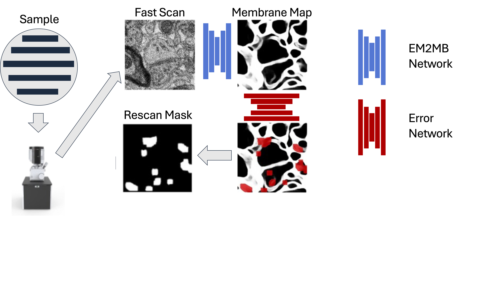
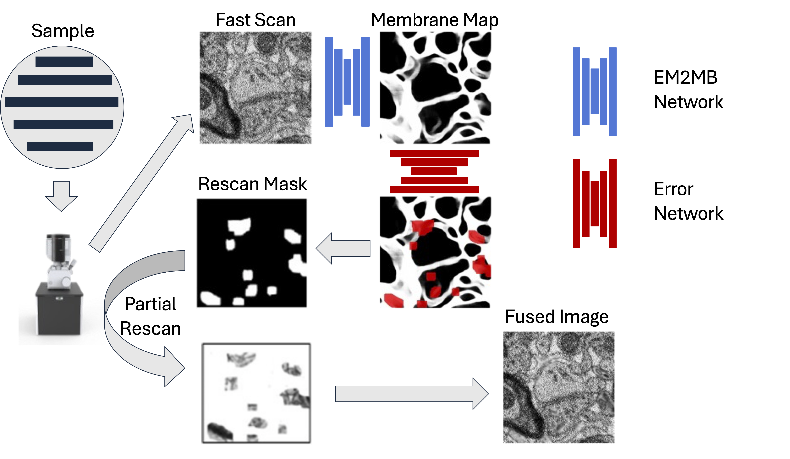
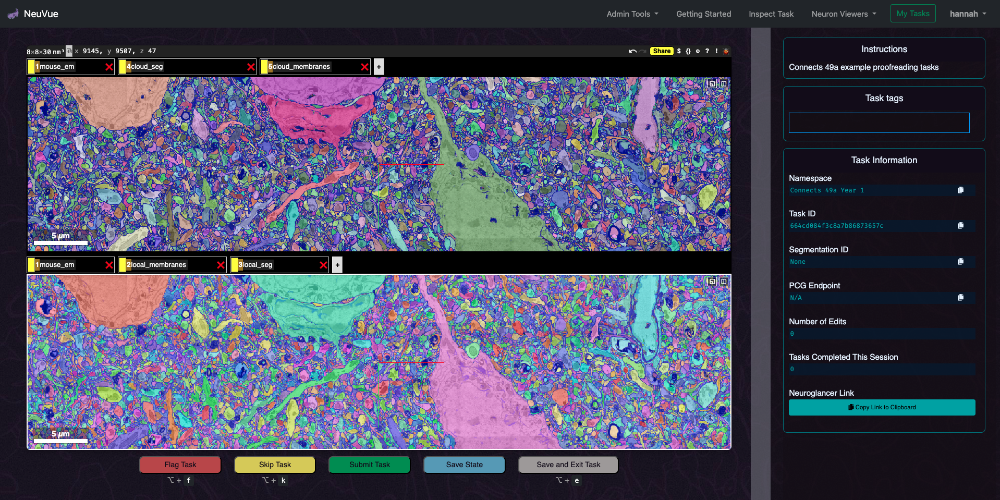

https://bit.ly/U01MilestonesSamuel2024
Milestone Report Meeting - U01-NS132158
Principal Investigators:
Aravinthan Samuel (contact), Jeff Lichtman, Hanspeter Pfister, Nir Shavit, Brock Wester
Project Title:
BRAIN CONNECTS: Rapid and Cost‐effective Connectomics with Intelligent Image Acquisition, Reconstruction, and Querying
Rapid and cost-effective connectomics with
intelligent image acquisition, reconstruction, and querying
Aim 1 –
Design and optimize a smart scanning pipeline.
Aim 2 –
Provide cloud-based tools to accelerate alignment and segmentation of connectomics datasets.
Aim 3 –
Develop validation framework to assess neural circuit reconstruction pipeline and wiring diagram accuracy.
Paper under review at
Nature Methods
Rapid and Cost‐effective Connectomics
with Intelligent Image Acquisition, Reconstruction, and Querying
Yaron Meirovitch
1,
Core Francisco Park
1,
Lu Mi
2,
Pavel Potocek
3,
Shashata Sawmya
2,
Yicong Li
1,
Ishaan Chandok
1,
Thomas Athey
2,
Neha Karlupia
1,
Yuelong Wu
1,
Daniel Berger
1,
Richard Schalek
1,
Hanspeter Pfister
1,
Remco Schoenmakers
2,
Maurice Peemen
2,
Jeff W. Lichtman
1,
Aravinthan D.T. Samuel
1,
Nir Shavit
2
1 Harvard, 2 MIT, 3 Thermofisher
Link to BiorxivConnectomics

The problem is visualizing tissue at the 1-10 millimeter scale
and
resolving
at the nanometer scale
Our testbed: Mouse Visual Cortex
Karlupia et al. (2023)
Scanning Electron Microscopes
1 cubic millimeter
↓
4 nm × 4 nm × 30 nm per voxel
↓
2,000,000,000,000,000 pixels

1 µs / pixel
↓
60 years

1 µs / pixel
with 61 beams
↓
~2 years
Scanning Electron Microscopes
1 cubic millimeter
↓
4 nm × 4 nm × 30 nm per voxel
↓
2,000,000,000,000,000 pixels
Increase the speed of
single beam SEM by 7-fold
↓
Lower the price point of connectomics
1 µs / pixel
↓
60 years
1 µs / pixel
with 61 beams
↓
~2 years
Scanning Electron Microscopes
1 cubic millimeter
↓
4 nm × 4 nm × 30 nm per voxel
↓
2,000,000,000,000,000 pixels
Increase the speed of
single beam SEM by 7-fold
↓
Lower the price point of connectomics
1 µs / pixel
↓
60 years
25 ns / pixel
↓
1.5 years
1 µs / pixel
with 61 beams
↓
~2 years
Fast, noisy images → lower segmentation quality


Long dwell times fix errors
Long dwell times fix errors
but not everywhere...
Segmentation accuracy varies spatially

Segmentation accuracy varies spatially
but also varies predictably
The idea in a 🥜
Use ultrafast imaging everywhere
Add slow imaging only where errors might occur
We built an ML-trained "error network"
We built an ML-trained "error network"
Trained with images containing segmentation errors
Error network predicts error prone regions

The microscope rescans any specified sub-region
The microscope rescans any specified sub-region

Bounding boxes around error-prone regions are slowly rescanned
The microscope rescans any specified sub-region
Bounding boxes around error-prone regions are slowly rescanned
Rescans and fast scans are fused
The microscope rescans any specified sub-region
Bounding boxes around error-prone regions are slowly rescanned
Rescans and fast scans are fused
Do boundary discontinuities cause segmentation problems?
We built the EM2MB network that is robust to image discontinuity
We built the EM2MB network that is robust to image discontinuity
Rescan an arbitrary S-shaped mask
We built the EM2MB network that is robust to image discontinuity

Rescan an arbitrary S-shaped mask
Create fused image
We built the EM2MB network that is robust to image discontinuity
Rescan an arbitrary S-shaped mask
Create fused image
EM2MB seamlessly segments across discontinuities
Start with samples on wafer

Put in Verios SEM
Initial fast scan (25ns pixel dwell time) (SEM PC)

Compute membranes and segmentation (support PC)

Identify error prone regions (support PC)

Compute rescan masks (SEM PC)
Rescan (support PC)

Create hybrid images (post-processing)
It's a waste to rescan cell bodies, blood vessels, etc.
It's a waste to rescan cell bodies, blood vessels, etc.
we trained a MUSTEXCLUDE network
that eliminates spurious rescan masks
MUSTEXCLUDE
High-resolution is sometimes always needed
High-resolution is sometimes always needed
we trained a MUSTINCLUDE network
to always rescan desired features like synapses
MUSTINCLUDE

Fused images can be fully segmented
but boundaries can be visually unappealing

Fused images can be fully segmented
but boundaries can be visually unappealing

Super-resolution/generative AI makes
fast scans resemble slow scans
How fast is SmartEM when image quality is the same as traditional EM?
Smart pixel time, $ t_{smart}$
\[ t_{smart}=t_{initial} + \alpha t_{rescan} \]
$ \alpha$.... rescan rate
$ t_{initial}$.... initial dwell time
$ t_{rescan}$.... rescan dwell time
How fast is SmartEM when image quality is the same as traditional EM?
Smart pixel time, $ t_{smart}$
\[ t_{smart}=t_{initial} + \alpha t_{rescan} \]
$ \alpha$.... rescan rate
$ t_{initial}$.... initial dwell time
$ t_{rescan}$.... rescan dwell time
With image quality of traditional 1000 ns dwell time,
smart pixel times are 7-fold shorter

Scanning Electron Microscopes
1 cubic millimeter
↓
4 nm × 4 nm × 30 nm per voxel
↓
2,000,000,000,000,000 pixels
Increase the speed of
single beam SEM by 7-fold
↓
Lower the price point of connectomics
1 µs / pixel
↓
60 years
1 µs / pixel
with 61 beams
↓
~2 years
Use the same idea to make a smart multibeam SEM?
No, the 61 (or 91 beams) of a modern multibeam SEM
are not independently controllable
Mouse Visual Cortex Imaged with SmartEM
Mouse Visual Cortex Imaged with SmartEM
Initial Dwell Time ($t_{initial}$): 99 ns/pixel
Rescan Rate ($\alpha$): 3%
Rescan Dwell Time ($t_{rescan}$): 800 ns
Mouse Visual Cortex Segmented with SmartEM
3D Segmentation from SmartEM

Automated segmentation correctly identifies 65% of dendritic spines
Any missed spine can be proofread and corrected
Same benchmark performance as state-of-the-art multibeam pipeline
Link to Shapson-Coe (2024)Datasets Leveraged in Cloud Workflows
Mouse
Datasets Leveraged in Cloud Workflows
Worm
Resources for Segmentation and Alignment
Access to Year 1 data and downstream products will be made available to the community via BossDB ecosystem (i.e. a projects page for CONNECTS work products).
Cloud based alignment
Top, raw unaligned
Bottom, cloud unaligned
Comparison local and cloud based alignment
Local (left) vs cloud aligned (right).
Implemented FEABAS alignment algorithm used in 2.1.1 with cloud services
Comparison local and cloud based alignment
- Video example demonstrates an individual slice, post alignment, processed by local and cloud services (left and right respectively).
- Mask generated via the Segment Anything Model (SAM), highlighting the 20 largest objects in each image for visualization purposes.
Cloud alignment implementation maintains performance of locally deployed instantiations.
Local and Cloud Segmentation with mEMBRAIN
Cloud aligned (top)

Local instantiation (bottom)
Note: colors randomly assigned by Neuroglancer visualization tools
Local and Cloud Segmentation with mEMBRAIN
Cloud aligned (top)

Local instantiation (bottom)
Note: colors randomly assigned by Neuroglancer visualization tools
Local vs Cloud Segmentation Assessment
Variation of Information (VI) score distribution of random subvolumes of cloud vs local segmentation (bootstrapped)

- VI implementation on noise (i.e., random subvolumes of size [512, 512, 1]) results in VI score of ~6.8 (A very bad score)
- Identical subvolumes get a VI score of 0 (A perfect score)
- 95% Credible interval: [0.1328216 0.15347959]
Cloud Enabled Workflow with Argo
Cloud Enabled Workflow with Argo
- Enables scalable and efficient management of complex connectomics pipelines on AWS.
- Cloud-agnostic and generalizable to any Kubernetes-compatible compute environment.
- Supports event-driven workflows for real-time data processing, closing the loop for iterative development and visualization.
Image Compression
Paper submitted to MICCAI
Image Compression
Aim 1 Milestones - Year 1
Milestone 1.1.1: Automated segmentation of membranes and synapses on SEM support computer
Success criteria: Software code run on SEM support computer producing segmentation and synapse classification results indistinguishable from offline processing of the same inputs as assessed by VI metric, carried out at a rate of at least 4 MB/sec per GPU.

Fast images are segmented and error-prone regions are calculated by the SEM support computer
in less time than fast acquisition by the SEM computer
Milestone 1.1.2: Image rescan and hybrid image generation on SEM support computer
Success criteria: Software code run on the SEM support computer producing rescan masks at a rate of 4MB of fast scan image/sec per GPU, with indistinguishable performance compared to the offline implementation.

During the learning phase, Error Network and FUSEDEM2MB are trained using traditional SEM
Milestone 1.1.2: Image rescan and hybrid image generation on SEM support computer
Success criteria: Software code run on the SEM support computer producing rescan masks at a rate of 4MB of fast scan image/sec per GPU, with indistinguishable performance compared to the offline implementation.

During the acquisition phase, images are rescanned and fused images are created in real-time
Milestone 1.1.3: Scan/rescan parameter evaluation
Success criteria: Framework and initial results testing scan/rescan parameters to determine tradeoffs for throughput vs. accuracy of segmentation and synapse classification.
SmartEM generates aligned and segmented connectomes for mouse cortex with equal 3D quality as multi-beam SEM
Milestone 1.1.4: Evaluation framework for human interpretation of hybrid images
Success criteria: Establish a transparent framework for human interaction with hybrid images for feature evaluation and proofreading of segmentation and synapse classification results.

Raw output of SmartEM is fully proofread-able by a human annotator.
Generative AI translates the style of SmartEM images to look like traditional EM images.
Milestone 1.1.5: Integrate segmentation analyses into rescan calculations
Success criteria: Prototype software that applies streamlined ROI detection and segmentation to enable realtime extraction of connectomic data. Results compared to offline analysis using extracted segment cross sections, to inform further iterative development.

ERRNET identifies regions susceptible to segmentation errors and re-scans them at a higher quality.
Complementary neural network (MUSTINCLUDE) always re-scans high-value regions, e.g., synapses.
Aim 2 Milestones - Year 1
Milestone 2.1.1: Highly parallelized algorithm for cloud-based image alignment
Success criteria: Convert alignment and segmentation software pipelines into multi-threaded algorithms for cluster compute.

Block matching technique obtain matching points between neighboring images.
Elastic transformations map raw data to the aligned volume are computed by mesh relaxation.
Algorithms re-developed for on-board alignment in local instantiation using Python.
Milestone 2.1.2: Deploy multi-threaded alignment and segmentation processes to cloud services
Success criteria: Prototype cloud alignment/segmentation implementation that maintains performance of locally deployed algorithms using metrics for Milestone 2.1.1.
We executed alignment and segmentation workflows in our cloud environment.
Execution of cloud implementations matched the performance and data outputs of the traditional, locally deployed solutions.
Aim 3 Milestones - Year 1
Milestone 3.1.1: Establish metrics and timeline for assessing of segmentation quality, synapse detection, and connectivity accuracy
Success criteria: Report with performance metrics and timeline for evaluating and optimizing smart-scan image acquisition and processing.
Milestone 3.1.2: Deploy initial open source validation framework, to enable evaluation against ground truth data
Success criteria: Demonstrate prototype software pipeline with ability to 1) visually compare images and associated segmentations, 2) overlay automated and manual annotations and/or generate new connectivity reconstructions from different imaging or algorithmic instantiations (e.g., from hybrid vs. low-speed images), 3) scalably compare manual or automated segmentation, annotation, reconstruction and connectivity metrics.
Performance measures, and our assessment software, will be key in validation of the SmartEM imaging methodology and will aid in community adoption and trust for downstream scientific discovery and inquiry.
Consensus Metrics (3.1.1)
Validation Framework (3.1.2)

Deployed NeuVue: a scalable web-based annotation and proofreading platform.
Open source at https://github.com/aplbrain/neuvue-app
Deployed at https://neuvue.neuzip.com/
Validation Framework (3.1.2)
Example visualization in NeuVue of cloud and local segmentation output
Validation Framework (3.1.2)
NeuVue toolbox
- Discretization and distribution of validation tasks among experts
- Manual synapse annotation and/or validation of automated detection techniques
- Manual neuron tracing and skeleton generation
- Segmentation error inspection and correction
- Data exploration through Neuroglancer
- Tagging of anomalies by experts during task completion
Sample synapse annotation task
NeuVue, along with our consensus measures, allows inspection and validation of SmartEM datasets.
Validation Framework (3.1.2)
NeuVue toolbox
- Segmentation algorithms typically produce merge and split errors, which affect consensus measures such as run length and NRI score.
- Error detection and correction can be a method to inspect and evaluate data quality.
- In this example, red and blue annotations distinguish neurites that have been merged incorrectly, indicating the solution required to adjudicate the error.
Sample error confirmation task
Validation Framework (3.1.2)
NeuVue toolbox
- NeuVue also includes automated report generation, enabling administrators to track the velocity at which validation tasks are completed.
- This capability allows us to quantify the total number of expert hours a validation workflow requires, as well as to compare the time it takes to calculate and evaluate individual metrics.
Example NeuVue dashboard from previous proofreading effort
PEDP Milestones - Year 1
Milestone P.1.1: Development of training framework and materials
Success criteria: Report detailing training framework and tools, including a summary description of open source materials. An interim report will be provided eight months after award to detail the validation and content development plans for feedback. Summary materials will be made available online.
Milestone P.1.2: Mentored experiences for high school and college students
Success criteria: Report detailing Year 1 student cohort recruitment and training approaches, as well as recruitment and mentoring goals for Years 2 and 3.
- Completed model selection, developed and gathered relevant training materials
- NeuroTrailblazers.org
- Pilot course for JHU undergraduates; framework for Morgan State student support
- SFN abstracts (3, 2 student led), conference talks and publications
Learning Model
Innovation = Talent + Education + Opportunity
-Dr. Darryll Pines
Barriers Facing Trailblazing Students
Live website
Looking ahead...
Aim 1. Increase SmartEM speed
- Increase efficiency of support computer-SEM computer interaction
- Currently, support computer and SEM computer take turns → have support computer compute while SEM computer acquires
- Improve prediction of error-prone regions using 3D information
- Currently, masks are computed separately for each section → use information from other sections to improve mask prediction
- Re-organize pipeline to increase efficiency by reducing rescan
- Currently, most rescans calculated to improve 2D segmentation don't actually improve 3D segmentation → eliminates rescans that do not help 3D connectomics
Aim 2. Cloud-based implementation
Workflow Orchestration
- Extend Argo Workflows platform to handle execution of segmentation, alignment, and downstream processes.
- Enable reproducible, scalable experiments:
- Batch evaluation
- Hyper-parameter tuning
- Model training
Comprehensive Eval
- Incorporate and assess alternative community-developed algorithms for EM processing.
- Benchmark discrete performance, resource usage, and cost to provide the community with a comprehensive view of tested models and algorithms.
Tool development
- Continue to develop data conversion and visualization tools as needed.
- ex. VAST to precompute
- Link novel tools within segmentation workflows to show their utility
- ex. em-compressor
Aim 3. Validation and assessment
- We will release open source materials which includes:
- Demonstration of consensus metrics on benchmark datasets
- Analyses that demonstrate performance envelopes of metrics for data of varying quality (e.g., artificial split/merge errors, noisy annotations)
- We continue to consider and integrate axillary metrics as relevant
- The validation framework developed will be deployed to evaluate performance of the SmartEM pipeline according to the consensus metrics and timeline provided in 3.1.1
PEDP
- P2.1 Refinement and assessment of training framework and materials.
- Public release of training framework which will include written materials, software training guides, and videos.
- This will also include a report detailing the training framework and preliminary results from student users.
- P2.2 Report detailing Year 2 student recruitment, training, and performance, as well as recruitment and mentoring goals for Year 3.
- Expand content to explicitly aim at trailblazing student barriers
- Deploy additional course offerings and identify opportunities for students to integrate with Aim 1-3 goals
- Explore sustainable and scalable funding mechanisms
- Leverage generative AI approaches for lightweight guidance and mentoring toward career pathways
Superior colliculus

Similar absolute size, but changes in structure and function from non-foveal mouse to foveal primate

0.3 mm x 0.3 mm x 1 mm volume captures lateral extent of largest neuron (wide-field vertical neuron)
One year with current SmartEM pipeline
Largest cortical volume with a single beam SEM to date
Possible pipeline reformulation
Scan all sections at high speed (SEM computer)
Possible pipeline reformulation
Segment all sections (support computer)

Possible pipeline reformulation
Compute error masks (support computer)
Possible pipeline reformulation
Delete superfluous error masks (support computer)

Possible pipeline reformulation
Rescan sub-selected masks at low speed (SEM computer)